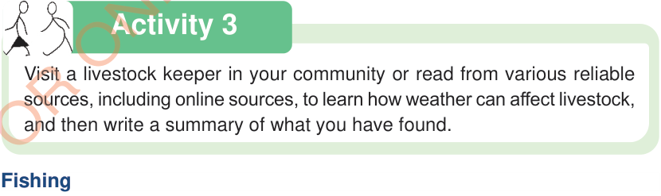

Activity 3
Visit a livestock keeper in your community or read from various reliable sources, including online sources, to learn how weather can affect livestock, and then write a summary of what you have found.